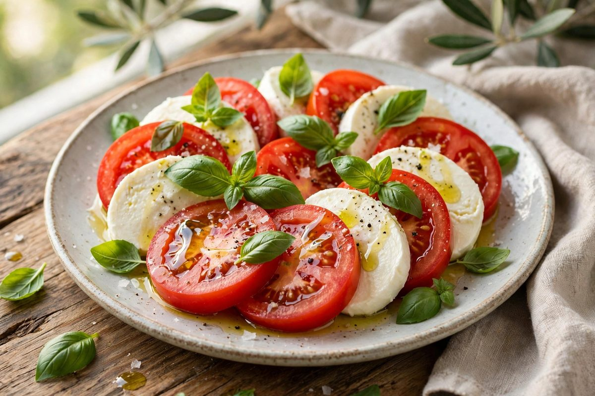

Home › Guides
Italian Salads: Caprese, Panzanella and Simple Greens

Italian salads are not an afterthought. They are a course in their own right, and they follow the same rule as the rest of Italian cooking: few ingredients, good quality, and nothing unnecessary. A good Italian salad needs ripe tomatoes, good oil, and the confidence to stop adding things. Learn three of them and you will never need a bagged salad again.
Caprese
Caprese is tomato, mozzarella, and basil, and it comes from Capri, where the colours match the Italian flag. Use ripe, flavourful tomatoes and fresh mozzarella, preferably buffalo mozzarella, sliced thick. Layer them alternately on a plate, tuck basil leaves between the slices, and drizzle with good olive oil.
Season with flaky salt and black pepper. Do not add vinegar, which is not part of the classic recipe, and do not refrigerate the tomatoes, which dulls their flavour. Caprese is best in summer, when tomatoes are at their best, and it should be eaten at room temperature.
Panzanella
Panzanella is a Tuscan bread salad that turns stale bread into something delicious. Soak chunks of stale bread briefly in water, then squeeze them dry. Toss with chopped tomatoes, red onion, cucumber, and basil, and dress with olive oil and red wine vinegar.
Let the salad sit for 20 minutes so the bread absorbs the tomato juices and the dressing. The bread should be moist and flavourful, not soggy. Panzanella is a summer dish, and it is best made with bread that is two or three days old.
Simple green salads
A simple green salad in Italy is lettuce, or rocket, dressed with oil, salt, and vinegar or lemon. The dressing is made in the bowl: salt first, then vinegar, then oil, tossed at the last moment so the leaves stay crisp. The ratio is about three parts oil to one part vinegar.
Use one or two greens, not a dozen. Rocket with Parmesan shavings and lemon is a classic. Little gem lettuce with olive oil and salt is enough on its own. Serve salad after the main course, as Italians do, to cleanse the palate, not before it.
Dressing rules
Italian dressing is not a bottled sauce. It is olive oil, salt, and an acid, usually vinegar or lemon juice, mixed in the bowl. Buy the best olive oil you can afford, because it is the main flavour. Use red wine vinegar for robust salads and white wine vinegar or lemon for delicate ones.
Dress a salad at the last moment, and toss it well so every leaf is coated. A salad that sits dressed for half an hour will wilt. Keep the dressing simple and let the ingredients speak.
Salads for every season
Italian salads change with the seasons, just as the rest of the cooking does. In winter, bitter leaves such as chicory and radicchio are dressed with olive oil and lemon, and they are a good partner for rich food. In spring, asparagus and artichokes appear, lightly dressed and served at room temperature.
In summer, tomatoes, cucumbers, and peppers are at their best, and salads are simple and fresh. In autumn, fennel and orange is a classic Sicilian combination, sweet and sharp at once. The rule is always the same: use what is in season, keep the dressing simple, and serve the salad after the main course.
Frequently Asked Questions
Does caprese have vinegar in it?
No. Classic caprese is tomato, mozzarella, basil, olive oil, salt and pepper. Vinegar is not part of the recipe.
What bread should I use for panzanella?
Stale, sturdy bread, two or three days old. Fresh bread turns to mush; stale bread holds its texture.
When is salad served in Italy?
After the main course, to cleanse the palate. It is a course in its own right, not a side dish.